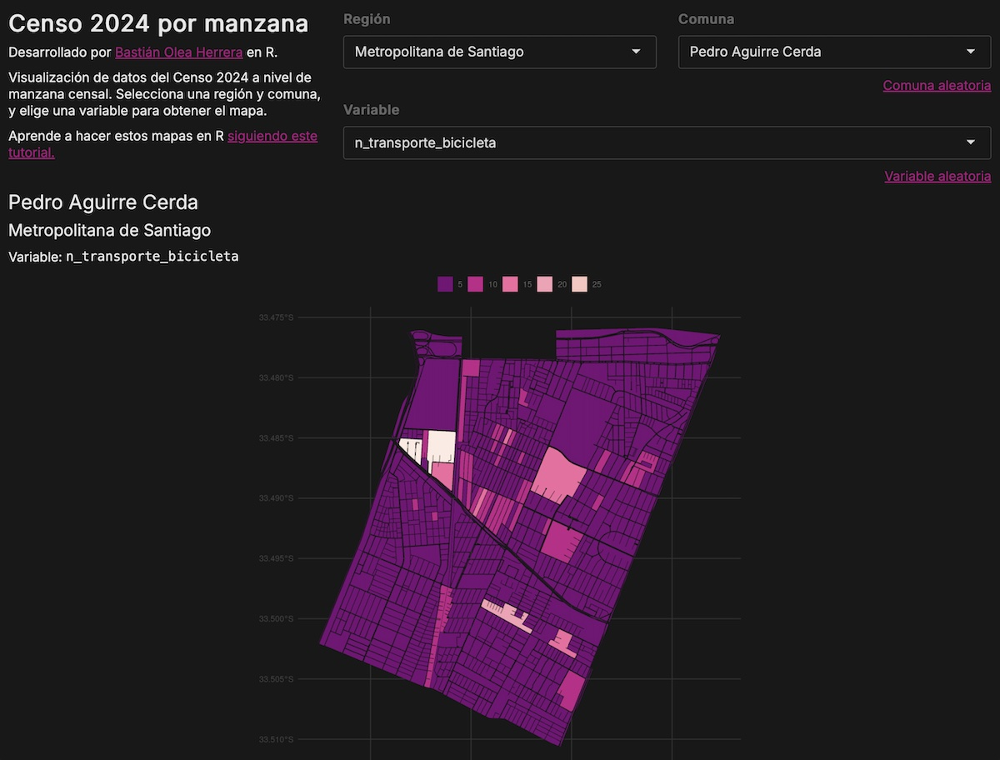

App: visualizador de mapas comunales del Censo 2024 por manzanas
19/12/2025
Continuando con la exploración de los datos georeferenciados del Censo 2024 por manzanas, en vez de ponerme a hacer mapas interesantes, hice una aplicación para visualizar mapas de cualquier variable del Censo en cualquier comuna del país, a nivel de manzana.
Aplicación
Es una aplicación súper sencilla, que carga las cartografías oficiales del Censo en formato Arrow como una base de datos, a la cual por medio de queries se le filtran región, comuna y la columna de variable elegida, para generar un mapa simple de una comuna dividida en manzanas censales 🍎
Toda la app fue hecha en R en menos de media hora ⏱️ gracias a la conveniencia de {dplyr} para poder conectarse a los datos cargados como
base de datos por Arrow, al
tutorial de hacer mapas del Censo 2024 con {ggplot2}, al
tutorial para poner temas a las apps Shiny y al
tutorial para temas de gráficos ggplot2.
En el fondo hice la app para aprender la carga de datos formato Arrow como base de datos, que es extremadamente fácil de hacer con R y {dplyr}, y me hizo pasar de cargar datos y filtrar en 1.1 segundos a tan sólo 0.1 segundos! 🚀 Si quieres que haga un tutorial de eso déjame un comentario o escríbeme 🤭
Resumen del código
Quiero destacar lo simple que es hacer aplicaciones como ésta con Shiny.
El código de la app son apenas 200 líneas, donde prácticamente lo único que se hace es crear los botoncitos, cargar los datos, filtrarlos y generar el gráfico.
La carga de los datos con {arrow} se hace con open_dataset() para cargar como base de datos sin leer todo el archivo ni traer los datos a la memoria.
# cargar datos
datos <- arrow::open_dataset("Cartografia_censo2024_Pais_Manzanas.parquet",
partitioning = c("COD_REGION", "CUT")
)
Luego simplemente con {dplyr} se hacen los filtros, que internamente se convierten a queries SQL que van a cargar y obtener solamente los datos necesarios desde la base de datos:
datos_fitrados <- datos() |>
# filtrar filas
filter(COD_REGION == input$region,
CUT == input$comuna) |>
# seleccionar columnas
select(all_of(input$variable), SHAPE) |>
# traer datos a memoria
collect() |>
# convertir mapa
st_as_sf(crs = 4326)
Finalmente los datos filtrados se visualizan como un mapa en {ggplot2}:
datos_filtrados |>
ggplot() +
aes(fill = !!sym(input$variable)) + # variable elegida
geom_sf(color = "#181818", linewidth = 0.1) +
# paleta de colores
scale_fill_fermenter(palette = 13, na.value = "#181818") +
# tema
theme(axis.text.x = element_text(angle = 90, vjust = .5),
axis.ticks = element_blank(),
panel.background = element_blank(),
panel.grid = element_line(color = "#333333"),
axis.text = element_text(color = "#444444"),
legend.text = element_text(color = "#666666")) +
guides(fill = guide_legend(title = NULL,
position = "top"))
La gracia de Shiny es que puedes tomar cualquier código de R que harías normalmente, y ponerlo dentro de una app interactiva, para lo que solamente necesitas reemplazar los filtros, selecciones, y otros lugares donde escribirías cosas a mano por un input$algo que sería la selección hecha por la/él usuaria/o de la aplicación web.